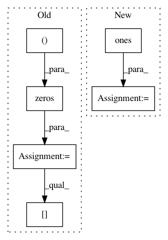

20065f034f2fac532da85257132a46dc576f5a33,starry/Map/utils.py,,RAxisAngle,#Any#Any#,10
Before Change
R = np.zeros((3, 3))
cost = np.cos(theta * np.pi / 180.)
sint = np.sin(theta * np.pi / 180.)
R[0, 0] = cost + axis[0] * axis[0] * (1 - cost)
R[0, 1] = axis[0] * axis[1] * (1 - cost) - axis[2] * sint
R[0, 2] = axis[0] * axis[2] * (1 - cost) + axis[1] * sint
R[1, 0] = axis[1] * axis[0] * (1 - cost) + axis[2] * sint
R[1, 1] = cost + axis[1] * axis[1] * (1 - cost)
R[1, 2] = axis[1] * axis[2] * (1 - cost) - axis[0] * sint
R[2, 0] = axis[2] * axis[0] * (1 - cost) - axis[1] * sint
R[2, 1] = axis[2] * axis[1] * (1 - cost) + axis[0] * sint
R[2, 2] = cost + axis[2] * axis[2] * (1 - cost)
return R
After Change
return res
def get_ortho_longitude_lines(inc=90, obl=0, nlines=13, npts=1000):
In pattern: SUPERPATTERN
Frequency: 3
Non-data size: 6
Instances
Project Name: rodluger/starry
Commit Name: 20065f034f2fac532da85257132a46dc576f5a33
Time: 2019-05-20
Author: rodluger@gmail.com
File Name: starry/Map/utils.py
Class Name:
Method Name: RAxisAngle
Project Name: nipy/dipy
Commit Name: f698c4dbfc266bae9c1d1ceb0d906863c9b54e2e
Time: 2013-05-14
Author: caruyer@gmail.com
File Name: dipy/core/sphere_stats.py
Class Name:
Method Name: random_uniform_on_sphere
Project Name: PIQuIL/QuCumber
Commit Name: ca14ae065b90a5aae6f282d84b16af60a465c115
Time: 2018-08-05
Author: emerali@users.noreply.github.com
File Name: examples/01_Ising/quantum_ising_chain.py
Class Name: TransverseFieldIsingChain
Method Name: Randomize